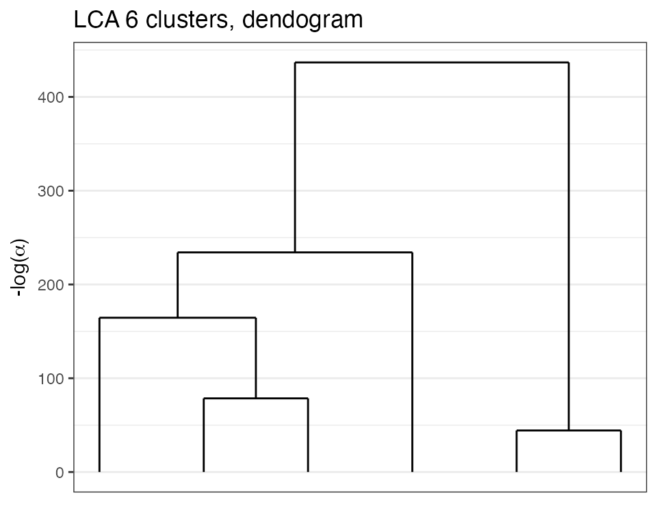
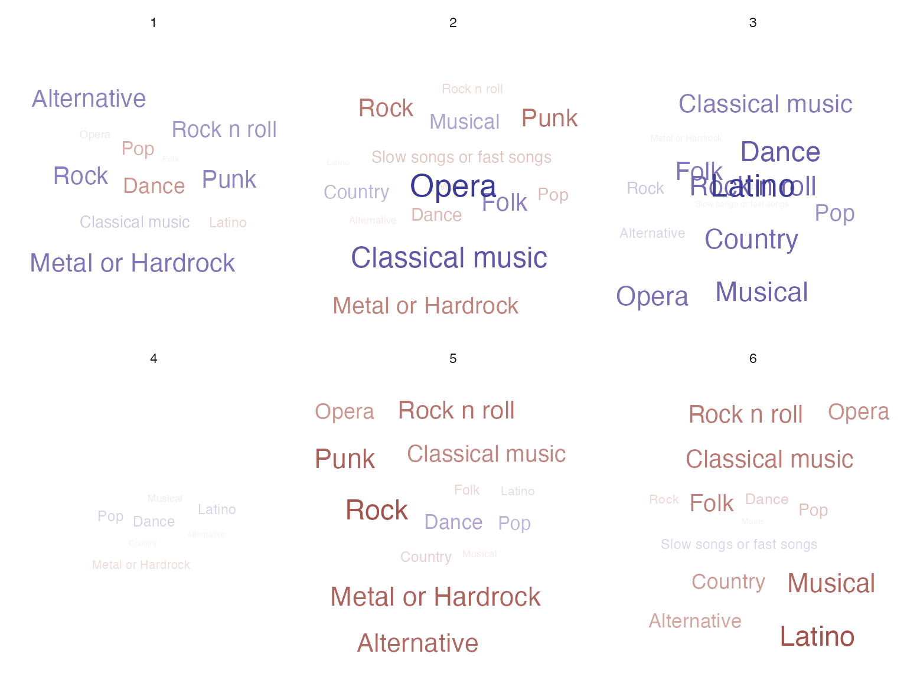

Loads the necessary packages for the vignettes.
library(future) # allows parralel processing in greed()
library(greed)
library(knitr)
library(dplyr)
library(tidyr)
library(purrr)
library(ggpubr)
library(ggplot2)
library(aricode)
library(careless) # string processing
library(ggwordcloud)
set.seed(2134)
future::plan("multisession", workers=2) # may be increased The greed package and DLVM framework allows the clustering of categorical data. This vignette describes typical use cases of the greed() function in this context, and illustrates its use on real datasets.
The model
We are interested in the clustering of categorical datasets, which are typically found in survey data or item response theory (ITR). In this context, we observe \(n\) individuals described by \(p\) variables, taking one among \(d_j\) modalities for each variable \(j\). Such datasets are typically represented using a one-hot-encoding of each factor in a design matrix \(\mathbf{X} \in \{0,1\}^{n \times d}\) where \(d = \sum_{j=1}^p d_j\). Latent class analysis (LCA) is a generative model for categorical data clustering which posits conditional independance of the factor variables conditionally on the (unknown) partition. Below is a description of its Bayesian formulation with the use of proper conjugate priors \[ \begin{equation} \begin{aligned} \pi&\sim \textrm{Dirichlet}(\alpha),\\ \forall k, \forall j, \quad \theta_{kj} &\sim \textrm{Dirichlet}_{d_j}(\beta), \\ Z_i&\sim \mathcal{M}_K(1,\pi),\\ \forall j=1, \ldots, p, \quad X_{ij}|Z_{ik}=1 &\sim \mathcal{M}_{d_j}(1, \theta_{kj}),\\ \end{aligned} \end{equation} \] For each cluster \(k\) and variable \(j\), the vector \(\theta_{kj}\) represents the probability of each of the \(d_j\) modalities. With the above choice of priors, the LCA model admits an exact ICL expression similar to the mixture of multinomials derived in the supplementary materials of Côme et. al. (2021, Section 3) .
The greed package implements this model via the Lca model-class and the default values for hyper-parameters are set as follows:
- \(\alpha\) is set to 1
- \(\beta\) is set to 1, defaulting to an uninformative uniform prior on \(\theta_{kj}\)
This default values may be changed and we refer to the ?Lca documentation for further details.
Analysis of two real datasets
We now illustrate the use of the greed package on two real datasets:
- Mushroom data from UCI Machine Learning Repository describing 8124 mushrooms with 22 phenotype variables. Each mushroom is classified as “edible” or “poisonous” and the goal is to recover the mushroom class from its phenotype.
- Young people survey data from Miroslav Sabo and avalaible on the Kaggle platform. This is an authentic example of questionnaire data where Slovakian young people (15-30 years old) were asked musical preferences according to different genres (rock, hip-hop, classical, etc.).
These two datasets come attached with greed package.
Mushroom data
data("mushroom")We begin by forming the necessary vectors for analysis. The data has \(n=8124\) rows and \(p=23\) columns. The first column contains the poisonous status of each mushroom with two possible values, “p” for “poisonous” and “e” for edible, it will serve as the clustering we seek to recover. The remaining variables are used for clustering. Note that we only use a subset of the data for illustration purpose here.
X = mushroom[,-1]
subset =sample(1:nrow(X), size = 1000)
label = mushroom$edibility[subset]
head(X[subset,1:10])
#> V2 V3 V4 V5 V6 V7 V8 V9 V10 V11
#> 7782 k y e f s f c n b t
#> 1459 x s n f n f w b h t
#> 2742 f f g t n f c b p t
#> 4154 x y g f f f c b p e
#> 1267 f f g f n f w b p t
#> 4593 f y y f f f c b p eClustering
The clustering is done via the main function greed() with argument model set to LCA and the genetic hybrid algorithm for ICLex maximization. The value of the \(\beta\) hyper-parameter for the Dirichlet prior on \(\theta_{kj}\) can be specified by the user, it defaults to 1.
Note: The
Lcamodel may only be used with datasets stored in a data.frame object containing factors only. When such data are provided to thegreed()function, anLcamodel is picked by default. To perform the clustering, it is therefore sufficient to call greed with the prepared data.frame.
sol_mush<-greed(X[subset,], model=Lca())
#>
#> ── Fitting a LCA model ──
#>
#> ℹ Initializing a population of 20 solutions.
#> ℹ Generation 1 : best solution with an ICL of -12696 and 13 clusters.
#> ℹ Generation 2 : best solution with an ICL of -12612 and 13 clusters.
#> ℹ Generation 3 : best solution with an ICL of -12603 and 13 clusters.
#> ℹ Generation 4 : best solution with an ICL of -12603 and 13 clusters.
#> ℹ Generation 5 : best solution with an ICL of -12603 and 13 clusters.
#> ── Final clustering ──
#>
#> ── Clustering with a LCA model 12 clusters and an ICL of -12589
kable(table(Edibility=label, Cluster=clustering(sol_mush)), format='html', row.names = T)| 1 | 2 | 3 | 4 | 5 | 6 | 7 | 8 | 9 | 10 | 11 | 12 | |
|---|---|---|---|---|---|---|---|---|---|---|---|---|
| e | 0 | 0 | 11 | 27 | 32 | 27 | 92 | 0 | 74 | 11 | 7 | 221 |
| p | 173 | 209 | 3 | 9 | 0 | 0 | 0 | 46 | 0 | 37 | 21 | 0 |
The hybrid genetic algorithm found a solution with \(K=12\) clusters which is quite over-segmented while displaying a good separation among edible and poisonous mushrooms. Partition’s NMI is 0.29 which is explained by the over-segmentation of the solution compared to the \(2\)-class problem.
Analysis of the hierarchy
Exploring the dendrogram provided by the hierarchical algorithm is quite useful in this case. We clearly see a hierarchical structure appearing with \(K=2\) main clusters. Thus, we can cut the tree at this height and look at the solution.
plot(sol_mush, type='tree')
sol2 = cut(sol_mush, 2)
knitr::kable(table(Edibility=label, Cluster=clustering(sol2)), format='html', row.names = T)| 1 | 2 | |
|---|---|---|
| e | 0 | 502 |
| p | 382 | 116 |
Here, we clearly see that the order of merges is consistent with the labels, and the final ARI is 0.57. While, some poisonous mushrooms have been categorized as edible, this is the consequence of the way the labels have been set, since mushrooms for which the edibility status was unknown were classified as poisonous by default. While this choice is reasonable from a strict health perspective. Furthermore, as the data documentation specifies, ’‘’’. Thus, the unsupervised problem is hard and the obtained clustering is already satisfactory. Moreover, this illustrates the interest of having the hierarchical algorithm in order to access coarser partitions.
Young people survey data
data("Youngpeoplesurvey")Data preparation
We begin by preprocessing the data, only keeping the categorical variable. The original dataset has \(n=1010\) respondents for \(p=150\). We keep only the feature related to the musical taste of the respondent and remove potential strike of identical responses. Eventually, the data are cast to factors with an explicit levels for the missing responses.
nc = 19
selected = Youngpeoplesurvey %>%
select(all_of(1:nc)) %>%
mutate(string = longstring(.)) %>%
mutate(sel = if_else(string <= 10,TRUE,FALSE) ) %>% pull(sel)
Xnum = Youngpeoplesurvey %>%
select(all_of(1:nc)) %>%
filter(all_of(selected) )
X = Xnum %>%
mutate_all(function(x){
x[is.na(x)]="NA"
factor(x,levels=c(1:5,"NA"))
}) %>%
droplevels()Hierarchical clustering
As previouslythe clustering is obtained with a call to greed and the Lca generative model will be taken by default since the dataset is a data.frame with factors only.
sol=greed(X)
#>
#> ── Fitting a LCA model ──
#>
#> ℹ Initializing a population of 20 solutions.
#> ℹ Generation 1 : best solution with an ICL of -27521 and 8 clusters.
#> ℹ Generation 2 : best solution with an ICL of -27521 and 8 clusters.
#> ── Final clustering ──
#>
#> ── Clustering with a LCA model 7 clusters and an ICL of -27490The algorithm found \(K=7\) clusters which are quite balanced. To explore the results, we plot the dendogram found.
plot(sol,type='tree')
Clustering analysis
We may also used the marginals plot to depict the conditional probabilities of the different responses knowing the clusters assignment.
plot(sol,type='marginals')The clusters appear to be quite different and coherent. For example, the seveth group (second top row, in purple) display a strong tendency to like Opera and Classical music and dislike more modern genres (Techno, Trance, Punk or Hi-Hop), whereas the 8th group (top row, in pink) corresponds to music lovers with quite eclectic musical taste across the proposed survey’s genres.
In addition, the conditional maximum a posteriori estimates of \(\theta{kj}\) are qvailable through the
coef()method.
params = coef(sol)#> [[1]]
#> <table>
#> <caption>Country</caption>
#> <thead>
#> <tr>
#> <th style="text-align:left;"> </th>
#> <th style="text-align:right;"> 1 </th>
#> <th style="text-align:right;"> 2 </th>
#> <th style="text-align:right;"> 3 </th>
#> <th style="text-align:right;"> 4 </th>
#> <th style="text-align:right;"> 5 </th>
#> <th style="text-align:right;"> NA </th>
#> </tr>
#> </thead>
#> <tbody>
#> <tr>
#> <td style="text-align:left;"> cluster1 </td>
#> <td style="text-align:right;"> 0.6359447 </td>
#> <td style="text-align:right;"> 0.2258065 </td>
#> <td style="text-align:right;"> 0.1013825 </td>
#> <td style="text-align:right;"> 0.0322581 </td>
#> <td style="text-align:right;"> 0.0046083 </td>
#> <td style="text-align:right;"> 0.0000000 </td>
#> </tr>
#> <tr>
#> <td style="text-align:left;"> cluster2 </td>
#> <td style="text-align:right;"> 0.3333333 </td>
#> <td style="text-align:right;"> 0.3333333 </td>
#> <td style="text-align:right;"> 0.0000000 </td>
#> <td style="text-align:right;"> 0.0000000 </td>
#> <td style="text-align:right;"> 0.0000000 </td>
#> <td style="text-align:right;"> 0.3333333 </td>
#> </tr>
#> <tr>
#> <td style="text-align:left;"> cluster3 </td>
#> <td style="text-align:right;"> 0.2145455 </td>
#> <td style="text-align:right;"> 0.5018182 </td>
#> <td style="text-align:right;"> 0.2254545 </td>
#> <td style="text-align:right;"> 0.0472727 </td>
#> <td style="text-align:right;"> 0.0072727 </td>
#> <td style="text-align:right;"> 0.0036364 </td>
#> </tr>
#> <tr>
#> <td style="text-align:left;"> cluster4 </td>
#> <td style="text-align:right;"> 0.1818182 </td>
#> <td style="text-align:right;"> 0.3636364 </td>
#> <td style="text-align:right;"> 0.1818182 </td>
#> <td style="text-align:right;"> 0.1948052 </td>
#> <td style="text-align:right;"> 0.0779221 </td>
#> <td style="text-align:right;"> 0.0000000 </td>
#> </tr>
#> <tr>
#> <td style="text-align:left;"> cluster5 </td>
#> <td style="text-align:right;"> 0.1562500 </td>
#> <td style="text-align:right;"> 0.0312500 </td>
#> <td style="text-align:right;"> 0.1562500 </td>
#> <td style="text-align:right;"> 0.2187500 </td>
#> <td style="text-align:right;"> 0.4375000 </td>
#> <td style="text-align:right;"> 0.0000000 </td>
#> </tr>
#> <tr>
#> <td style="text-align:left;"> cluster6 </td>
#> <td style="text-align:right;"> 0.2811388 </td>
#> <td style="text-align:right;"> 0.3416370 </td>
#> <td style="text-align:right;"> 0.2348754 </td>
#> <td style="text-align:right;"> 0.1281139 </td>
#> <td style="text-align:right;"> 0.0106762 </td>
#> <td style="text-align:right;"> 0.0035587 </td>
#> </tr>
#> <tr>
#> <td style="text-align:left;"> cluster7 </td>
#> <td style="text-align:right;"> 0.3760684 </td>
#> <td style="text-align:right;"> 0.2735043 </td>
#> <td style="text-align:right;"> 0.2222222 </td>
#> <td style="text-align:right;"> 0.0598291 </td>
#> <td style="text-align:right;"> 0.0512821 </td>
#> <td style="text-align:right;"> 0.0170940 </td>
#> </tr>
#> </tbody>
#> </table>
#>
#> [[2]]
#> <table>
#> <caption>Latino</caption>
#> <thead>
#> <tr>
#> <th style="text-align:left;"> </th>
#> <th style="text-align:right;"> 1 </th>
#> <th style="text-align:right;"> 2 </th>
#> <th style="text-align:right;"> 3 </th>
#> <th style="text-align:right;"> 4 </th>
#> <th style="text-align:right;"> 5 </th>
#> <th style="text-align:right;"> NA </th>
#> </tr>
#> </thead>
#> <tbody>
#> <tr>
#> <td style="text-align:left;"> cluster1 </td>
#> <td style="text-align:right;"> 0.4193548 </td>
#> <td style="text-align:right;"> 0.2580645 </td>
#> <td style="text-align:right;"> 0.1751152 </td>
#> <td style="text-align:right;"> 0.0599078 </td>
#> <td style="text-align:right;"> 0.0737327 </td>
#> <td style="text-align:right;"> 0.0138249 </td>
#> </tr>
#> <tr>
#> <td style="text-align:left;"> cluster2 </td>
#> <td style="text-align:right;"> 1.0000000 </td>
#> <td style="text-align:right;"> 0.0000000 </td>
#> <td style="text-align:right;"> 0.0000000 </td>
#> <td style="text-align:right;"> 0.0000000 </td>
#> <td style="text-align:right;"> 0.0000000 </td>
#> <td style="text-align:right;"> 0.0000000 </td>
#> </tr>
#> <tr>
#> <td style="text-align:left;"> cluster3 </td>
#> <td style="text-align:right;"> 0.0218182 </td>
#> <td style="text-align:right;"> 0.2218182 </td>
#> <td style="text-align:right;"> 0.2545455 </td>
#> <td style="text-align:right;"> 0.2727273 </td>
#> <td style="text-align:right;"> 0.2218182 </td>
#> <td style="text-align:right;"> 0.0072727 </td>
#> </tr>
#> <tr>
#> <td style="text-align:left;"> cluster4 </td>
#> <td style="text-align:right;"> 0.1558442 </td>
#> <td style="text-align:right;"> 0.1168831 </td>
#> <td style="text-align:right;"> 0.3636364 </td>
#> <td style="text-align:right;"> 0.1558442 </td>
#> <td style="text-align:right;"> 0.2077922 </td>
#> <td style="text-align:right;"> 0.0000000 </td>
#> </tr>
#> <tr>
#> <td style="text-align:left;"> cluster5 </td>
#> <td style="text-align:right;"> 0.0625000 </td>
#> <td style="text-align:right;"> 0.0000000 </td>
#> <td style="text-align:right;"> 0.1250000 </td>
#> <td style="text-align:right;"> 0.1250000 </td>
#> <td style="text-align:right;"> 0.6562500 </td>
#> <td style="text-align:right;"> 0.0312500 </td>
#> </tr>
#> <tr>
#> <td style="text-align:left;"> cluster6 </td>
#> <td style="text-align:right;"> 0.0889680 </td>
#> <td style="text-align:right;"> 0.2882562 </td>
#> <td style="text-align:right;"> 0.2811388 </td>
#> <td style="text-align:right;"> 0.2099644 </td>
#> <td style="text-align:right;"> 0.1281139 </td>
#> <td style="text-align:right;"> 0.0035587 </td>
#> </tr>
#> <tr>
#> <td style="text-align:left;"> cluster7 </td>
#> <td style="text-align:right;"> 0.4017094 </td>
#> <td style="text-align:right;"> 0.3675214 </td>
#> <td style="text-align:right;"> 0.1452991 </td>
#> <td style="text-align:right;"> 0.0769231 </td>
#> <td style="text-align:right;"> 0.0000000 </td>
#> <td style="text-align:right;"> 0.0085470 </td>
#> </tr>
#> </tbody>
#> </table>Cluster structures may also be visualized with a word clouds of feature names. In this representation, a color encodes if the feature has an average score greater than the average score of the whole population. A big blue feature corresponds to music type that scores higher than the mean in this cluster and big red feature to music type that have a smaller score than the mean in the corresponding group.
params = coef(sol)
means_scores = lapply(params$Thetak,function(x){
apply(x[,1:5],1,function(r){
sum(r*1:5)
})
})
means_scores_long = do.call(rbind,
map2(means_scores, names(means_scores),function(x,y){
tibble(cluster=1:K(sol),mean=x,var=y)
})) %>%
mutate(var = gsub("\\."," ",var))
means_scores_glob = Xnum %>%
summarise_all(function(x){mean(x,na.rm=TRUE)}) %>%
tidyr::pivot_longer(all_of(1:nc),names_to = "var",) %>%
mutate(var = gsub("[,-/]"," ",var))
gg = means_scores_long %>%
left_join(means_scores_glob) %>%
mutate(dm=mean-value)
#> Joining, by = "var"
ggplot(gg %>% filter(abs(dm)>0.1), aes(label = var, size = abs(dm),color=dm)) +
geom_text_wordcloud() +
scale_size_area(max_size = 7) +
theme_minimal() +
scale_color_gradient2(guide="none")+
facet_wrap(~cluster)
#> Warning in wordcloud_boxes(data_points = points_valid_first, boxes = boxes, :
#> One word could not fit on page. It has been placed at its original position.
#> Warning in wordcloud_boxes(data_points = points_valid_first, boxes = boxes, :
#> One word could not fit on page. It has been placed at its original position.
#> Warning in wordcloud_boxes(data_points = points_valid_first, boxes = boxes, :
#> Some words could not fit on page. They have been placed at their original
#> positions.
#> Warning in wordcloud_boxes(data_points = points_valid_first, boxes = boxes, :
#> Some words could not fit on page. They have been placed at their original
#> positions.
Using such a visualization allow to easily describe the different groups. The first cluster tends to dislike almost all surveyed musical genres, the second almost exlusively likes Dance music, the third have tastes close to the global mean of the dataset, the forth and sixths correspond to Hard-Rockers, the fifth to Rockers, the seventh to exclusive Opera and Classical music lover, and the eight to people with eclectic taste liking almost every surveyed music genres.